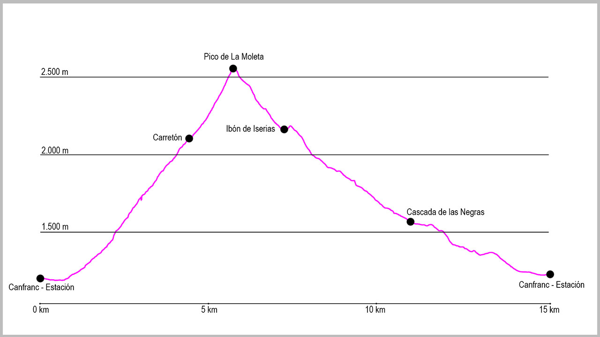

Desde el puente de la Estación de Canfranc, punto de salida de la ruta, tomaremos la calle principal de Canfranc-Estación en dirección sur. Tras 750 metros de ligero descenso, saldremos del casco urbano para llegar a la central de Canal Roya, y justo al pasarla cruzaremos un puente que sale a nuestra izquierda. Nada más pasarlo comienza una pista de forma ascendente que a poco más de 100 metros del inicio se bifurca. En este momento tomaremos la pista de la izquierda. Una vez en la pista, discurriremos por ella unos 600 metros obviando el cruce que sale a nuestra izquierda hacia el paseo de Los Melancólicos, donde seguiremos a la derecha.
Poco después cogeremos el siguiente desvío, esta vez a nuestra derecha, donde comienza el camino que nos llevará hasta el Carretón. El sendero es bastante cómodo, con suaves “zetas” que nos harán ir ganando altura de manera progresiva. Cuando llevemos un tercio de la subida, tendremos que prestar atención al paso por el interior de un pequeño túnel para cruzar la tubería de la central de Ip que nos acompañara casi toda la subida. Seguiremos subiendo progresivamente hasta llegar a otro cruce, donde volveremos a tomar la opción de la derecha. A partir de este punto solo tendremos que seguir el camino.
En la parte final de la subida, ya por encima de los 2.000 de altitud, tendremos unos 100 metros de longitud con alguna clavija que nos ayudará a sortear el desnivel, pero que pasaremos sin complicación. Poco después de este tramo casi acabará ya el bosque. Justo a la salida del mismo, volveremos a tener un pequeño trozo de roca, donde tendremos que extremar la precaución, pero que nos dará ya paso a la pista del Ibón de Ip.
Nada más salir a la pista, solo tenemos que cruzarla para coger el camino que nos lleva hacia la moleta. Al principio es una zona marcada con algún árbol, pero enseguida el bosque desaparece y empieza la subida más fuerte (justo donde nos encontramos una piedra que pone con pintura blanca “La Moleta”). Desde aquí tendremos que tomar como referencia el pico y seguir los hitos que nos llevarán hasta la ante-cima. La última chimenea de acceso al pico es algo más técnica, pero podremos sortearla sin grandes dificultades.
Una vez en el pico empieza el descenso hacia el ibón de Iserias. Desde la propia cima cogeremos dirección norte para situarnos en el balcón del pico y buscar unos hitos que nos llevarán a un paso estrecho. Nada más pasarlo el camino empieza a estar más marcado y enseguida nos llevará hasta el collado de la Moleta. Aquí giraremos a la derecha para empezar el verdadero descenso.
Esta parte del recorrido está bastante clara y simplemente tendremos que seguir la traza y los hitos hasta llegar al mismo ibón, el cual rodearemos por la izquierda hasta la coger la salida de la hoya por una estrecha zona de hierba que nos llevará a dar vista al valle de Izas. Una vez hayamos subido este repecho, el descenso primero hasta la caseta de la Vuelta de Iserias y después hasta la cascada de las Negras es bastante rápido y cómodo.
Una vez lleguemos al valle giraremos a nuestra izquierda para afrontar la última parte del recorrido. Bajaremos primero por un camino bastante cómodo para llegar después a una zona de piedra y más adelante a una zona de arbolado, antes de llegar a la pista de Coll de Ladrones. Una vez en ella giraremos a la izquierda para afrontar una ligera subida hasta llegar al fuerte, para desde allí ya ver Canfranc y afrontar la última parte del descenso hasta el pueblo.
